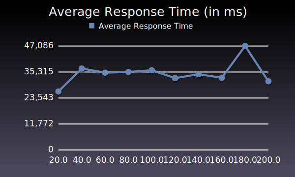

01 Analyse der Applikation
von Thomas Esterer, MMT-M 2012
Testsetup
- WEBrick 1.3.1 Server
- ruby 1.8.7
- SQLite
- Development Enviroment
Benchmarking Tool
Autobench in Verbindung mit httperf.
Folgende Variablen wurden gewählt:
# low_rate, high_rate, rate_step
# The ‘rate’ is the number of number of connections to open per second.
# A series of tests will be conducted, starting at low rate,
# increasing by rate step, and finishing at high_rate.
- low_rate = 20
- high_rate = 200
- rate_step = 20
# num_conn, num_call
# num_conn is the total number of connections to make during a test
# num_call is the number of requests per connection
# The product of num_call and rate is the the approximate number of
# requests per second that will be attempted.
- num_conn = 10
- num_call = 1
Folgender Befehl wurde ausgeführt:
autobench --single_host --host1 localhost --port1 3000 --uri1 / --num_conn 10 --low_rate 20 --rate_step 20 --high_rate 200 --num_call 1 --timeout 50 --file logged_out/front_page.tsv
Durchgeführte Tests
- Front Page /
- User Page Many Recipes /users/43
- User Page Less Recipes /users/51
- Recipe Page Many Ingredients /recipes/2013
- Recipe Page Less Ingredients /recipes/2016
(Jeweils eingeloggt – neuer eigener User – und ausgeloggt)
Zielsetzung
Ausgangssituation: Die Front Page (/) bietet im ausgeloggten Zustand eine hohe Fehlerrate und kann nur hin und wieder mit einer durchschnittlichen Zeit von 25 Sekunden antworten.
Ziel: Die Front Page (/) sollte im ausgeloggten Zustand alle Requests bedienen können, und eine durchschnittliche Antwortzeit von weniger als 50% der aktuellen 25 Sekunden (12,5 Sekunden) bieten.
Resultate grafisch
Die Grafiken wurden mithilfe des autobench_grapher (inkl. eigener Adaptierungen) erstellt (https://raw.github.com/brandonparsons/performance_tests/master/graphing/autobench_grapher.rb).
Logged Out - Front Page

Logged Out - User Page Many Recipes

Logged Out - User Page Less Recipes

Logged Out - Recipe Page Many Ingredients

Logged Out - Recipe Page Less Ingredients

Logged In - Front Page
Logged In - User Page Many Recipes
Logged In - User Page Less Recipes

Logged In - Recipe Page Many Ingredients
Logged In - Recipe Page Less Ingredients